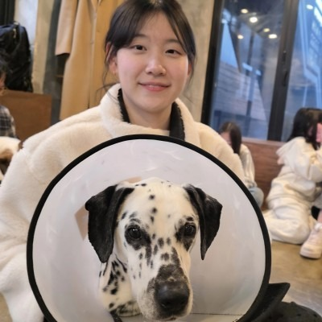

M.S. Student · MLV Lab, KAIST
Jeehye Na 나지혜
I work on post-training of large language and vision-language models — reasoning, knowledge distillation, and preference optimization — at the Machine Learning & Vision Lab (MLV Lab), advised by Prof. Hyunwoo J. Kim.
I am an M.S. student at KAIST, where I am a member of the MLV Lab led by Prof. Hyunwoo J. Kim. Before joining KAIST in 2025, I studied Biomedical Engineering at Korea University (2020–2025), where I started doing research on multimodal LLMs as an undergraduate.
My research centers on post-training of LLMs and VLMs: how to make models reason better, how to transfer capability from a teacher to a student efficiently (knowledge distillation and self-distillation), and how to align models with preference optimization and reinforcement fine-tuning. I have also worked on retrieval-augmented and video understanding with multimodal LLMs.
* denotes equal contribution. My name is highlighted.
-
2025 – Present
KAIST
M.S. student, Machine Learning & Vision Lab (MLV Lab)
Advisor: Prof. Hyunwoo J. Kim
-
2020 – 2025
Korea University
B.S. in Biomedical Engineering
-
2025 – Present
MLV Lab, KAIST
Graduate researcher — post-training of LLMs/VLMs (reasoning, distillation, preference optimization)
-
2024 – 2025
MLV Lab, Korea University
Undergraduate research intern — multimodal LLMs for video understanding and retrieval-augmented VQA
-
Fall 2026
Computer Vision and Machine Learning KTP.50033
Teaching Assistant · KAIST (KT–KAIST program)
-
Spring 2026
Introduction to Artificial Intelligence CS.40700
Teaching Assistant · KAIST